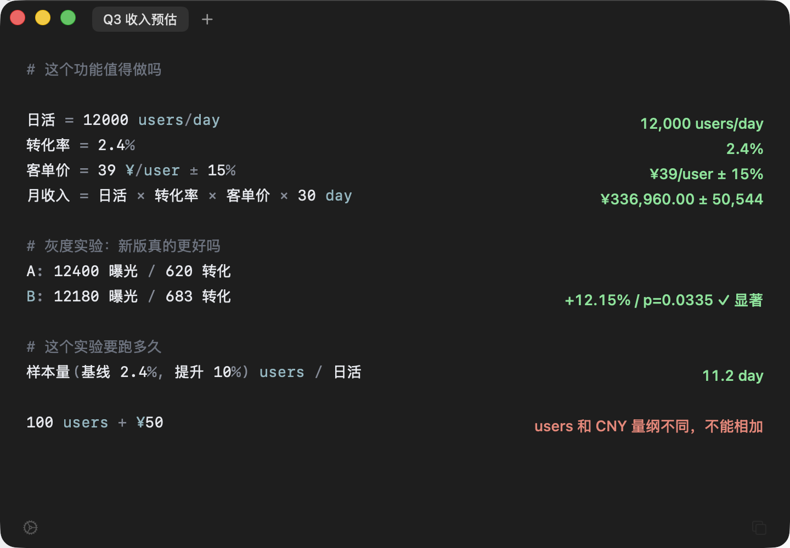

Estimate revenue, price out an AI feature, read an A/B result —
one line in, one answer out. It knows what users/day and
$/user mean, runs the significance test for you, and carries your
error bars all the way to the bottom line.
估收入、算 AI 成本、看 A/B 实验结果——写一行，右边出一个答案。
它认识「人/天」「元/人」这些业务单位，会自己算显著性，
也会把你的误差范围一路带到结论。
macOS 14 or later · Signed and notarized · 1.7 MB macOS 14 或更新版本 · 已签名公证 · 1.7 MB

⌥Space to call it up, Esc to put it away — focus goes back to where you were ⌥Space 呼出，Esc 收起——焦点回到你刚才那个窗口
Every other calculator lets all three through without a word. 这三种错，Excel 和普通计算器都会安静地放过去。
Excel hands you 150, and that number ends up in a deck. Napkin refuses, and tells you what the two units actually were. Excel 会给你 150，然后这个数被写进汇报。Napkin 直接拒绝， 并告诉你两边的单位分别是什么。
Conversion is up 24% — looks shippable. But at a thousand users per arm there's a 24% chance it's luck. Napkin just says not significant. 新版转化率高了 24%，看着该上线了。但每组只有一千人， 这个差异有 24% 的概率纯属偶然。Napkin 会直接说「不显著」。
ARPU is "about 39". Somehow the monthly revenue comes out to the cent. Write the range and Napkin tells you how far off it can be. 客单价「大概 39 块」，算出来的月收入却精确到分。 写下浮动范围，Napkin 会告诉你结论能差多少。
Left is what you type. Right is what it computes. 左边是你写的，右边是它算的。
DAU × ARPU × 30 day and it knows the answer is
money, not headcount. Units carry through the whole expression on their own.
写 日活 × 客单价 × 30 day，它知道结果是钱，不是人数。
单位跟着算式一路推导，不用自己盯。
2k tokens/user × $3/Mtok gives cost per user; multiply by
DAU for the monthly bill. You supply the price — a built-in table would go stale,
and a stale price table is worse than none.
2k tokens/user × $3/Mtok 得到每用户成本，再乘日活就是月账单。
模型价格自己填——内置的价格表过期比没有更危险。
samplesize(2.4%, 10%) users / (12k users/day) → 11.2 day
检出目标提升需要多少样本，除以日活就是天数：
样本量(2.4%, 10%) users / (12k users/day) → 11.2 天
5% → 5.61% gives you both, so you don't quote the wrong one.
转化率从 5% 到 5.61%，两种说法都对但差别很大。
5% → 5.61% 两个数一起给，汇报时不会说错。
revenue = DAU × ARPU × 30 instead of
12000×39×30. Change one assumption and the rest recomputes —
and it still makes sense three days later.
写 月收入 = 日活 × 客单价 × 30 而不是 12000×39×30。
改一个假设整段自动重算，三天后回来还看得懂。
0.1 + 0.2 is 0.3. Most calculators give you
0.30000000000000004 — floating point and money don't mix.
0.1 + 0.2 就是 0.3。多数计算器在这里会给你
0.30000000000000004——用浮点数算钱迟早出事。
macOS 14 or later · Signed and notarized macOS 14 或更新版本 · 已签名公证